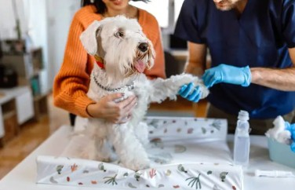

Importancia de las vacunas
Las vacunas previenen enfermedades graves como parvovirus, moquillo o rabia. Sigue el calendario recomendado por tu veterinario y evita riesgos innecesarios.
La prevención es la mejor inversión en salud para tu compañero.